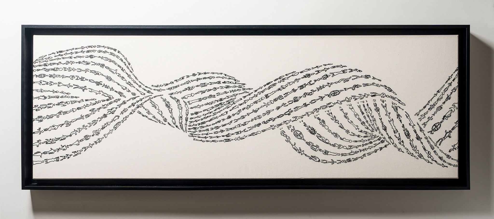
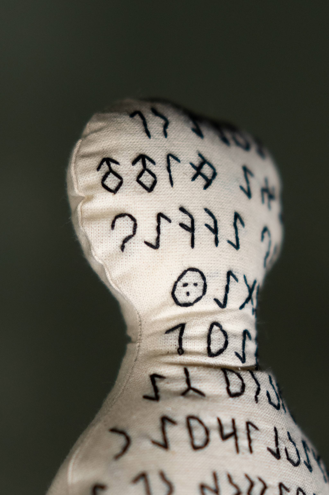
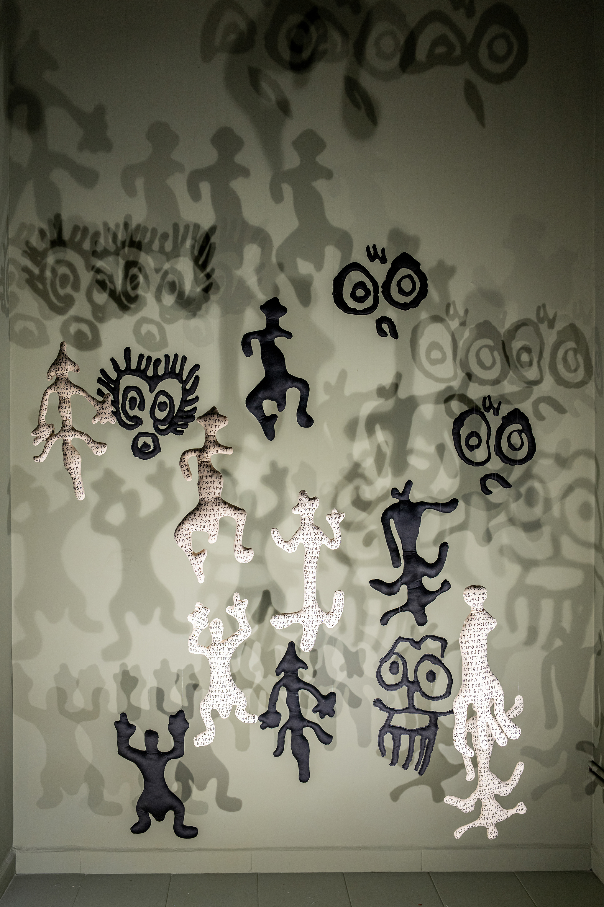
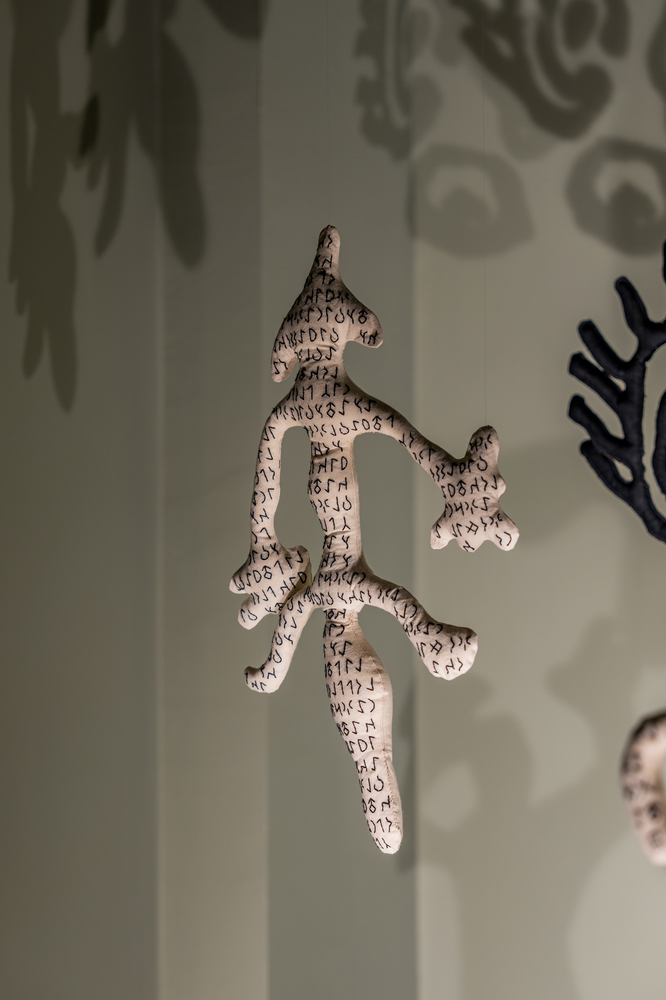
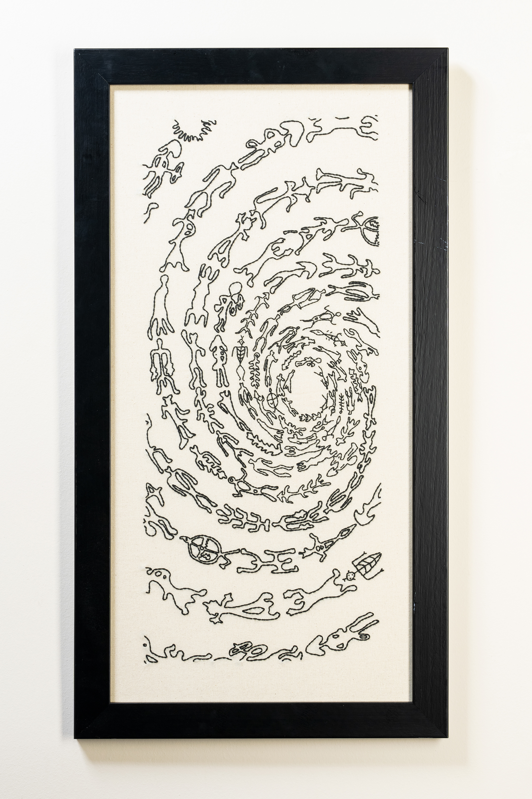
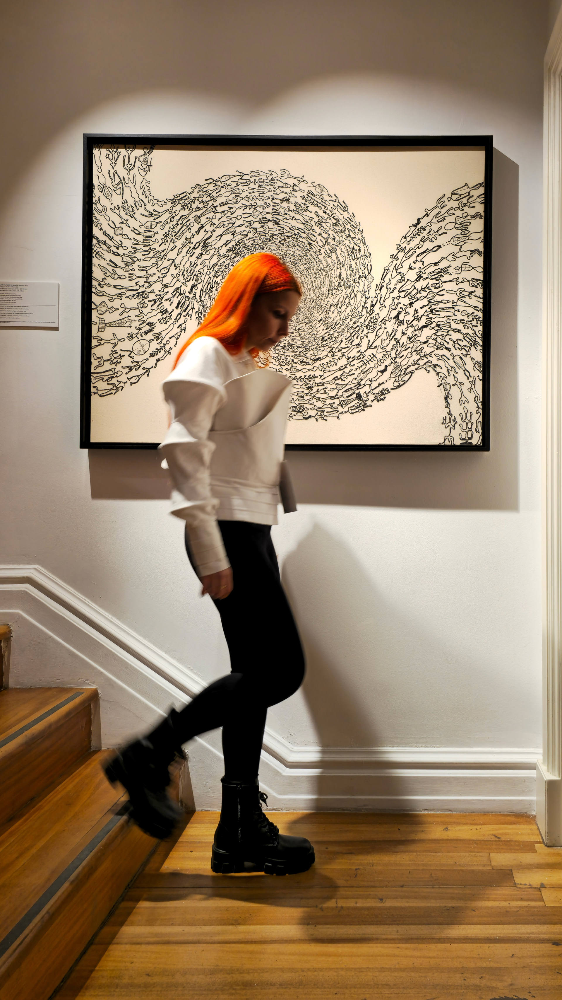
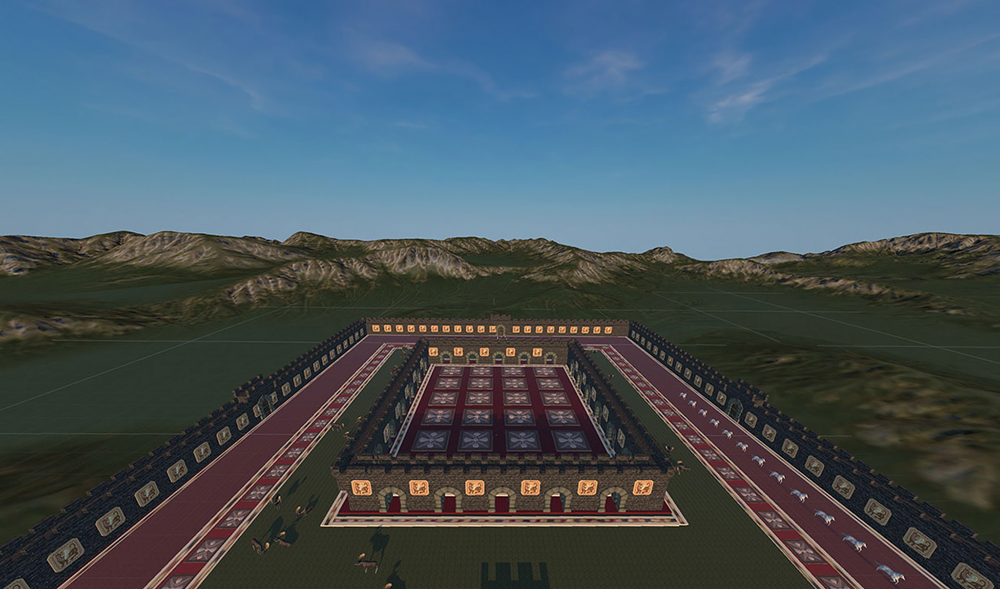

Overcome
Geldiler
2024 | Installation | RE-
Kaç gün daha susabilirim? Sustukça sesim daha da kısılıyor… Gözümü kaç gün daha kapalı tutabilirim? Ellerim daha fazla gözlerimi kapatmaya yetmiyor…
How many more days can I remain silent? The more I remain silent, the quieter my voice becomes... How many more days can I keep my eyes closed?

Tunnel of Time
Zaman Tüneli
2024 | 156x55 cm | Baselected
Başının ve sonunun ölçülemez uzaklıkta olduğu bir tünelde kaç biçimde var olduk? Kaç biçime ayna olup, kaç biçim oluşturduk?
In a tunnel where the beginning and end are immeasurably distant, in how many forms did we exist? How many forms did we become mirrors of, and how many forms did we create?

Unanswered Questions
Cevapsız Sorular
2024 | Textile | RE-
Bu halkım şeytana yeniliyor. Ağır acılardan kurtulamıyorlar. Bu Tanrım bir merhamet gösterecek mi? Devam eden ömrüm az olur, yaşım kısa olur. Büyük engel nasıl aşılır?
My people are succumbing to the devil. They cannot escape their heavy pains. Will my God show mercy? Will my remaining life be short?

ID
Vesika
2024 | 100x125 cm | RE-
“Köyümüzde her yıl, ayin öncesi nüfus sayımı yapılır. Kayıplarımıza göre ayin biçimimizi belirleriz. Bu sayım Ud Yılı’ndan. Kaybımız az, coşkuyla kutladık.”
"Each year in our village, a census is taken before the ritual. We determine the form of the ritual based on our losses. This census is from the Year of Ud."

Inquiry
Sorgu
2024 | Textile | RE-
Gelecek sene merhamet edilecek mi? Bu sene huzur verilecek mi? Bundan sonra yeşil otları ayaklarımız ezecek mi?
Will there be mercy next year? Will there be peace this year? From now on, will we tread on green grass?
Flag of Uprising
İsyan Bayrağı
2024 | Textile | RE-
Bizi yalvartıp ağlatmayın. Yanlışlarımız çoğaldı. Tanrımız, diye yalvarmaya başladığımızda başımıza merhamet gelir mi? Ölümsüz hayat istiyoruz.
Do not make us beg and cry. Our wrongs have multiplied. When we begin to plead, saying our God, will mercy come upon us? We desire eternal life.

Muted
Susturulmuş
2024 | Textile | RE-
Biz kuzgun gibi çığlık atarken, Dualar Tanrımıza ulaşmıyor. Tay gibi kişnediğimizde, Yine de sesimiz ulaşmıyor.
While we scream like ravens, Our prayers do not reach our God. When we neigh like colts, Our voices still do not get through.

Portal: Beyond the Door
Kapının Ardı
2024 | 30x60 cm | Baselected
Aynı yolda olanlar birleşir bir olur, Aynı güneşle ısınıp, aynı yağmurla sulanır, Hangi yöne dönerse dönsün, aynı yola gider.
Those who are on the same path unite and become one, Warmed by the same sun and watered by the same rain, Whichever way they turn, they go the same way.

The Grand Ritual
Büyük Ayin
2023 | 135x108cm | BASE 23
Aynı Gök'e sığınıp, binlerce parçaya bölünür, Bölündükçe tamamlanıp Bir olur. Birlik ses olur, yön olur, ritm olur.
Taking refuge in the same Sky, it breaks into thousands of pieces, As it is divided, it becomes completed and becomes One.

Pazyryk Maidan
VR Experience
2023 | Interactive Art
M.Ö. 5.-4. yüzyıllara tarihlenen ve tarihin bilinen en eski halısı olan Pazırık Halısı... Bu meydanda dolaşmak nasıl olurdu?
Dating back to the 5th-4th centuries BC, the Pazyryk Carpet is known as the oldest known carpet in history. What would it be like to walk through this maidan?